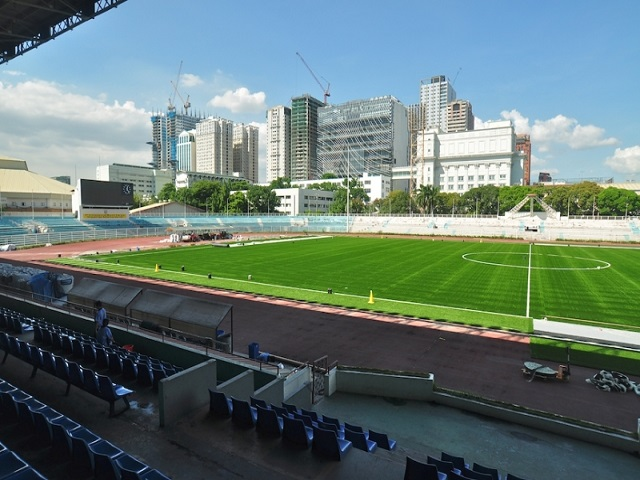

Camp Nou
SpainWanda Metropolitano
SpainSantiago Bernabeu
SpainEtihad Stadium
EnglandSir Alex Ferguson Stadium
EnglandStamford Bridge
EnglandParc de Princes
FranceAllianz Stadium
ItalyAllianz Stadium
GermanySignal Iduna Park
Germany
